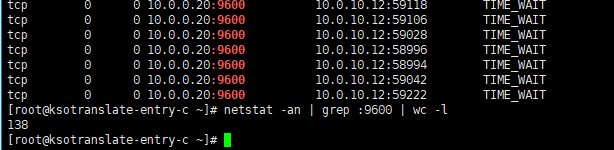

<!DOCTYPE html><html lang="en"><head><meta name="generator" content="Hexo 3.8.0"><meta http-equiv="content-type" content="text/html; charset=utf-8"><meta content="width=device-width, initial-scale=1.0, maximum-scale=1.0, user-scalable=0" name="viewport"><meta content="yes" name="apple-mobile-web-app-capable"><meta content="black-translucent" name="apple-mobile-web-app-status-bar-style"><meta content="telephone=no" name="format-detection"><meta name="description" content="We are champion."><title>Nginx反向代理后端服务出现大量TIME_WAIT问题分析与解决 | codjust的BLOG</title><link rel="stylesheet" type="text/css" href="/css/style.css?v=0.0.0"><link rel="stylesheet" type="text/css" href="//lib.baomitu.com/normalize/8.0.1/normalize.min.css"><link rel="stylesheet" type="text/css" href="//lib.baomitu.com/pure/1.0.0/pure-min.css"><link rel="stylesheet" type="text/css" href="//lib.baomitu.com/pure/1.0.0/grids-responsive-min.css"><link rel="stylesheet" href="//lib.baomitu.com/font-awesome/4.7.0/css/font-awesome.min.css"><script type="text/javascript" src="//lib.baomitu.com/jquery/3.3.1/jquery.min.js"></script><link rel="icon" mask="" sizes="any" href="/favicon.ico"><link rel="Shortcut Icon" type="image/x-icon" href="/favicon.ico"><link rel="apple-touch-icon" href="/apple-touch-icon.png"><link rel="apple-touch-icon-precomposed" href="/apple-touch-icon.png"></head><body><div class="body_container"><div id="header"><div class="site-name"><h1 class="hidden">Nginx反向代理后端服务出现大量TIME_WAIT问题分析与解决</h1><a id="logo" href="/.">codjust的BLOG</a><p class="description">Everything will change!</p></div><div id="nav-menu"><a class="current" href="/."><i class="fa fa-home"> Home</i></a><a href="/archives/"><i class="fa fa-archive"> Archive</i></a><a href="/about/"><i class="fa fa-user"> About</i></a><a href="/atom.xml"><i class="fa fa-rss"> RSS</i></a></div></div><div class="pure-g" id="layout"><div class="pure-u-1 pure-u-md-3-4"><div class="content_container"><div class="post"><h1 class="post-title">Nginx反向代理后端服务出现大量TIME_WAIT问题分析与解决</h1><div class="post-meta">Jan 19, 2019<span> | </span><span class="category"><a href="/categories/nginx/">nginx</a></span></div><a class="disqus-comment-count" href="/2019-01-19-nginx-upstream-time-wait-analysis.html#vcomment"><span class="valine-comment-count" data-xid="/2019-01-19-nginx-upstream-time-wait-analysis.html"></span><span> Comment</span></a><div class="clear"><div class="toc-article" id="toc"><div class="toc-title">Contents</div><ol class="toc"><li class="toc-item toc-level-4"><a class="toc-link" href="#问题"><span class="toc-number">1.</span> <span class="toc-text">问题</span></a></li><li class="toc-item toc-level-4"><a class="toc-link" href="#配置keepalive"><span class="toc-number">2.</span> <span class="toc-text">配置keepalive</span></a></li><li class="toc-item toc-level-4"><a class="toc-link" href="#忽视的细节"><span class="toc-number">3.</span> <span class="toc-text">忽视的细节</span></a></li><li class="toc-item toc-level-4"><a class="toc-link" href="#总结"><span class="toc-number">4.</span> <span class="toc-text">总结</span></a></li></ol></div></div><div class="post-content"><p>公司的API网关开发工作主要是我在负责管理，我选择的是基于OpenResty定制的Orange和目前市场上非常受欢迎的Api网关产品Kong，在目前我们的业务场景中，Orange和Kong我都打算使用。Orange灵活的规则匹配在有流量甄别的场景中还是非常好用的，不过大量的规则会对性能有所损耗，因此Orange比较适合做业务网关。<br><a id="more"></a></p>
<h4 id="问题"><a href="#问题" class="headerlink" title="问题"></a>问题</h4><hr>
<p>该文中出现的问题其实和OpenResty没有直接关系，使用Nginx同样会遇到，因此标题写的是Nginx，实际生产环境中我是使用的OpenResty。<br>我们使用OpenResty反向代理我们的业务后端服务，我们发现在高峰期的时候后端服务监听的端口有大量TIME_WAIT状态出现，这说明OpenResty和后端服务的连接是短连接，每次请求代理都需要建立新的连接，后端处理完请求之后，就会close和Openrsety的连接，高峰期时并发高就会出现大量TIME_WAIT.（图示忘记grep TIME_WAIT了，不过不影响现象描述）</p>
<p></p>
<h4 id="配置keepalive"><a href="#配置keepalive" class="headerlink" title="配置keepalive"></a>配置keepalive</h4><hr>
<p>Nginx反向代理是可以配置keepalive的，通过复用连接来进行代理操作，可以大大增加效率，如果nginx和后端服务保持长连接，那么TIME_WAIT的情况肯定就能减少甚至避免了，只要nginx或者后端任何一方不主动close基本该连接是不会断开的。</p>
<p>keepalive的配置如下所示:<br><figure class="highlight nginx"><table><tr><td class="gutter"><pre><span class="line">1</span><br><span class="line">2</span><br><span class="line">3</span><br><span class="line">4</span><br><span class="line">5</span><br></pre></td><td class="code"><pre><span class="line"><span class="attribute">upstream</span> http_backend &#123;</span><br><span class="line">    <span class="attribute">server</span> <span class="number">127.0.0.1:8080</span>;</span><br><span class="line"></span><br><span class="line">    <span class="attribute">keepalive</span> <span class="number">16</span>;</span><br><span class="line">&#125;</span><br></pre></td></tr></table></figure></p>
<p>keepalive指令的官方描述：<br><figure class="highlight plain"><table><tr><td class="gutter"><pre><span class="line">1</span><br><span class="line">2</span><br><span class="line">3</span><br><span class="line">4</span><br></pre></td><td class="code"><pre><span class="line">Syntax:	keepalive connections;</span><br><span class="line">Default:	—</span><br><span class="line">Context:	upstream</span><br><span class="line">This directive appeared in version 1.1.4.</span><br></pre></td></tr></table></figure></p>
<p><code>The connections parameter sets the maximum number of idle keepalive connections to upstream servers that are preserved in the cache of each worker process. When this number is exceeded, the least recently used connections are closed.</code></p>
<p>keepalive后面跟的数字为nginx和upstream server保持的最大连接数量，当超过该数量，则关闭最近最少使用的连接。</p>
<p>理论来说配置了keepalive TIME_WAIT的情况应该能得到解决才对，事实上我在配置后端服务的upstream时，是有配置keepalive的，但是后端服务依旧出现大量TIME_WAIT的情况，也就是说keepalive并未生效，这到底是什么原因呢？</p>
<h4 id="忽视的细节"><a href="#忽视的细节" class="headerlink" title="忽视的细节"></a>忽视的细节</h4><hr>
<p>经过一段时间的排查，我们发现nginx是有向upstream server建立长连接的，只不过很快就断开了，最后在重新审阅官方文档时，发现下面的描述：<br><code>For HTTP, the proxy_http_version directive should be set to “1.1” and the “Connection” header field should be cleared:</code></p>
<figure class="highlight nginx"><table><tr><td class="gutter"><pre><span class="line">1</span><br><span class="line">2</span><br><span class="line">3</span><br><span class="line">4</span><br><span class="line">5</span><br><span class="line">6</span><br><span class="line">7</span><br><span class="line">8</span><br><span class="line">9</span><br><span class="line">10</span><br><span class="line">11</span><br><span class="line">12</span><br><span class="line">13</span><br><span class="line">14</span><br><span class="line">15</span><br><span class="line">16</span><br></pre></td><td class="code"><pre><span class="line"><span class="attribute">upstream</span> http_backend &#123;</span><br><span class="line">    <span class="attribute">server</span> <span class="number">127.0.0.1:8080</span>;</span><br><span class="line"></span><br><span class="line">    <span class="attribute">keepalive</span> <span class="number">16</span>;</span><br><span class="line">&#125;</span><br><span class="line"></span><br><span class="line"><span class="section">server</span> &#123;</span><br><span class="line">    ...</span><br><span class="line"></span><br><span class="line">    <span class="attribute">location</span> /http/ &#123;</span><br><span class="line">        <span class="attribute">proxy_pass</span> http://http_backend;</span><br><span class="line">        <span class="attribute">proxy_http_version</span> <span class="number">1</span>.<span class="number">1</span>;</span><br><span class="line">        <span class="attribute">proxy_set_header</span> Connection <span class="string">""</span>;</span><br><span class="line">        ...</span><br><span class="line">    &#125;</span><br><span class="line">&#125;</span><br></pre></td></tr></table></figure>
<p>我们赶紧检查了proxy的配置，发现确实是没有配置http version的，也就是默认是http 1.0，如果是http 1.0则需要往上游服务器带上“Connection: Keep-Alive”的header用来维持连接，但nginx官方不建议这么做。<br>因此，正确的做法是:<br><figure class="highlight nginx"><table><tr><td class="gutter"><pre><span class="line">1</span><br><span class="line">2</span><br></pre></td><td class="code"><pre><span class="line"><span class="attribute">proxy_http_version</span> <span class="number">1</span>.<span class="number">1</span>; <span class="comment">#设置代理的http协议为1.1版本,1.1默认连接都是持久连接</span></span><br><span class="line"><span class="attribute">proxy_set_header</span> Connection <span class="string">""</span>;<span class="comment">#清除Connection header，这里设置为"keep-alive"也是可以的，如果不清楚，默认该头部是为close的，因此要么清除close要么设置为"keep-alive"</span></span><br></pre></td></tr></table></figure></p>
<p>示例代码：<br><figure class="highlight nginx"><table><tr><td class="gutter"><pre><span class="line">1</span><br><span class="line">2</span><br><span class="line">3</span><br><span class="line">4</span><br><span class="line">5</span><br><span class="line">6</span><br><span class="line">7</span><br><span class="line">8</span><br><span class="line">9</span><br><span class="line">10</span><br><span class="line">11</span><br><span class="line">12</span><br><span class="line">13</span><br><span class="line">14</span><br><span class="line">15</span><br><span class="line">16</span><br><span class="line">17</span><br><span class="line">18</span><br><span class="line">19</span><br><span class="line">20</span><br><span class="line">21</span><br></pre></td><td class="code"><pre><span class="line"><span class="comment">#proxy_server:</span></span><br><span class="line"><span class="section">http</span> &#123;</span><br><span class="line">   <span class="attribute">upstream</span> backend &#123;</span><br><span class="line">       <span class="attribute">server</span> <span class="number">127.0.0.1:8080</span>;</span><br><span class="line">       <span class="attribute">keepalive</span> <span class="number">16</span>;</span><br><span class="line">     &#125;</span><br><span class="line">     <span class="section">server</span> &#123;</span><br><span class="line">       <span class="attribute">listen</span> <span class="number">9988</span>;</span><br><span class="line">       <span class="attribute">location</span> /proxy &#123;</span><br><span class="line">         <span class="section">access_by_lua_block</span> &#123;</span><br><span class="line">           <span class="attribute">local</span> headers = ngx.req.get_headers()</span><br><span class="line">           local connection = headers[<span class="string">"Connection"</span>]</span><br><span class="line">       ngx.log(ngx.ERR, <span class="string">"connection: "</span>, connection) <span class="comment">#获取客户端带来的Connection头部值</span></span><br><span class="line">     &#125;</span><br><span class="line">      proxy_http_version <span class="number">1</span>.<span class="number">1</span>;</span><br><span class="line">      <span class="attribute">proxy_set_header</span> Connection <span class="string">""</span>;<span class="comment">#如果proxy_http_version 1.0,则proxy_set_header Connection "keep-alive"也是ok的</span></span><br><span class="line">      <span class="attribute">proxy_pass</span> http://backend;</span><br><span class="line">    &#125;</span><br><span class="line"></span><br><span class="line">  &#125;</span><br><span class="line">&#125;</span><br></pre></td></tr></table></figure></p>
<figure class="highlight nginx"><table><tr><td class="gutter"><pre><span class="line">1</span><br><span class="line">2</span><br><span class="line">3</span><br><span class="line">4</span><br><span class="line">5</span><br><span class="line">6</span><br><span class="line">7</span><br><span class="line">8</span><br><span class="line">9</span><br><span class="line">10</span><br><span class="line">11</span><br><span class="line">12</span><br><span class="line">13</span><br><span class="line">14</span><br></pre></td><td class="code"><pre><span class="line"><span class="comment">#backend_server</span></span><br><span class="line"><span class="section">http</span> &#123;</span><br><span class="line">    <span class="section">server</span> &#123;</span><br><span class="line">        <span class="attribute">listen</span> <span class="number">8080</span>;</span><br><span class="line">        <span class="attribute">location</span> / &#123;</span><br><span class="line">          <span class="section">content_by_lua_block</span> &#123;</span><br><span class="line">            <span class="attribute">local</span> headers = ngx.req.get_headers()</span><br><span class="line">            local connection = headers[<span class="string">"Connection"</span>]</span><br><span class="line">            ngx.say(connection) <span class="comment">#返回代理后的Connection头部值，不要不为close则连接可维持</span></span><br><span class="line">          &#125;</span><br><span class="line">        &#125;</span><br><span class="line"></span><br><span class="line">    &#125;</span><br><span class="line">  &#125;</span><br></pre></td></tr></table></figure>
<h4 id="总结"><a href="#总结" class="headerlink" title="总结"></a>总结</h4><hr>
<p>虽然只是简简单单的几个配置项，但是涉及到了对http协议的熟悉程度和如何将知识应用到实际场景中去，这次尽管是一次失误，但是却暴露了自己的功底还是远远不够，很多知识明白是明白，但是实操经验依旧不足，在往后的学习工作中要多去思考现象背后的原理，灵活应用掌握的知识，知识光看了还不够，能随心所欲的应用到各个方面才是属于自己的。</p>
</div><div class="tags"><a href="/tags/nginx/">nginx</a></div><div class="post-nav"><a class="next" href="/2019-01-13-newyearplan.html">2019年度flag</a></div><div id="vcomment"></div><script src="//cdn1.lncld.net/static/js/3.0.4/av-min.js"></script><script src="//unpkg.com/valine@latest/dist/Valine.min.js"></script><script>var notify = 'true' == true ? true : false;
var verify = 'false' == true ? true : false;
var GUEST_INFO = ['nick','mail','link'];
var guest_info = 'nick,mail,link'.split(',').filter(function(item){
  return GUEST_INFO.indexOf(item) > -1
});
guest_info = guest_info.length == 0 ? GUEST_INFO :guest_info;
window.valine = new Valine({
  el:'#vcomment',
  notify:notify,
  verify:verify,
  appId:'NeaKgae689ffdnyAD5eqPnKw-gzGzoHsz',
  appKey:'eOS5Mdx6fvTdBabf1egNigqS',
  placeholder:'Just so so',
  avatar:'mm',
  guest_info:guest_info,
  pageSize:'10'
})</script></div></div></div><div class="pure-u-1-4 hidden_mid_and_down"><div id="sidebar"><div class="widget"><form class="search-form" action="//www.baidu.com/baidu" method="get" accept-charset="utf-8" target="_blank"><input type="search" name="word" maxlength="20" placeholder="Search"><input type="hidden" name="si" value="https://codjust.github.io"><input name="tn" type="hidden" value="bds"><input name="cl" type="hidden" value="3"><input name="ct" type="hidden" value="2097152"><input name="s" type="hidden" value="on"></form></div><div class="widget"><div class="widget-title"><i class="fa fa-folder-o"> Categories</i></div><ul class="category-list"><li class="category-list-item"><a class="category-list-link" href="/categories/nginx/">nginx</a></li><li class="category-list-item"><a class="category-list-link" href="/categories/后端开发那些事儿/">后端开发那些事儿</a></li><li class="category-list-item"><a class="category-list-link" href="/categories/年度规划/">年度规划</a></li></ul></div><div class="widget"><div class="widget-title"><i class="fa fa-star-o"> Tags</i></div><div class="tagcloud"><a href="/tags/lua/" style="font-size: 15px;">lua</a> <a href="/tags/messagepack/" style="font-size: 15px;">messagepack</a> <a href="/tags/yearplan/" style="font-size: 15px;">yearplan</a> <a href="/tags/git/" style="font-size: 15px;">git</a> <a href="/tags/nginx/" style="font-size: 15px;">nginx</a> <a href="/tags/tmux/" style="font-size: 15px;">tmux</a></div></div><div class="widget"><div class="widget-title"><i class="fa fa-file-o"> Recent</i></div><ul class="post-list"><li class="post-list-item"><a class="post-list-link" href="/2019-01-19-nginx-upstream-time-wait-analysis.html">Nginx反向代理后端服务出现大量TIME_WAIT问题分析与解决</a></li><li class="post-list-item"><a class="post-list-link" href="/2019-01-13-newyearplan.html">2019年度flag</a></li><li class="post-list-item"><a class="post-list-link" href="/reset-git-force-push.html">记一次git push -f 后的回滚操作</a></li><li class="post-list-item"><a class="post-list-link" href="/2017-05-25-lua-cmsgpack-serialize-lua-object.html">使用lua-cmsgpack序列化和反序列化lua对象</a></li><li class="post-list-item"><a class="post-list-link" href="/install-tmux-some-problem.html">源码安装tmux遇到的一些问题</a></li></ul></div><div class="widget"><div class="widget-title"><i class="fa fa-external-link"> Links</i></div><ul></ul><a href="https://github.com/codjust" title="github" target="_blank">github</a><ul></ul><a href="http://www.example2.com/" title="site-name2" target="_blank">site-name2</a><ul></ul><a href="http://www.example3.com/" title="site-name3" target="_blank">site-name3</a></div></div></div><div class="pure-u-1 pure-u-md-3-4"><div id="footer">Copyright © 2019 <a href="/." rel="nofollow">codjust的BLOG.</a> Powered by<a rel="nofollow" target="_blank" href="https://hexo.io"> Hexo.</a><a rel="nofollow" target="_blank" href="https://github.com/tufu9441/maupassant-hexo"> Theme</a> by<a rel="nofollow" target="_blank" href="https://github.com/pagecho"> Cho.</a></div></div></div><a class="show" id="rocket" href="#top"></a><script type="text/javascript" src="/js/totop.js?v=0.0.0" async></script><script type="text/javascript" src="//lib.baomitu.com/fancybox/3.5.2/jquery.fancybox.min.js" async></script><script type="text/javascript" src="/js/fancybox.js?v=0.0.0" async></script><link rel="stylesheet" type="text/css" href="//lib.baomitu.com/fancybox/3.5.2/jquery.fancybox.min.css"><script type="text/javascript" src="/js/codeblock-resizer.js?v=0.0.0"></script><script type="text/javascript" src="/js/smartresize.js?v=0.0.0"></script></div></body></html>